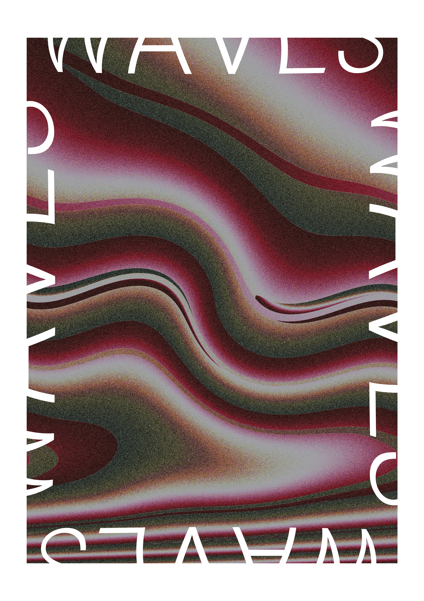
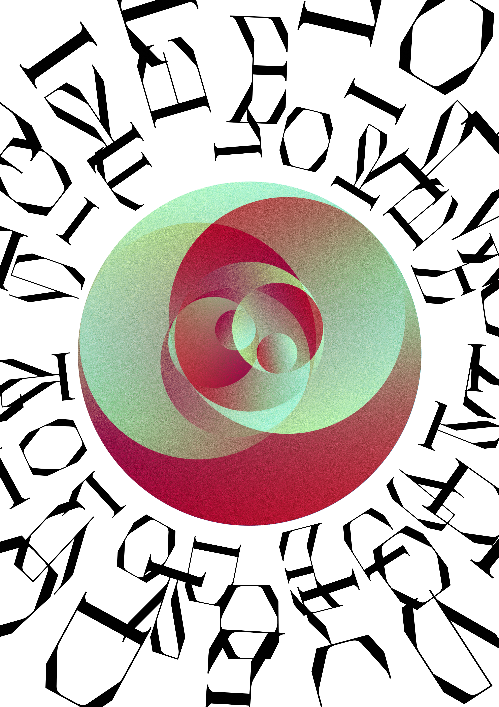
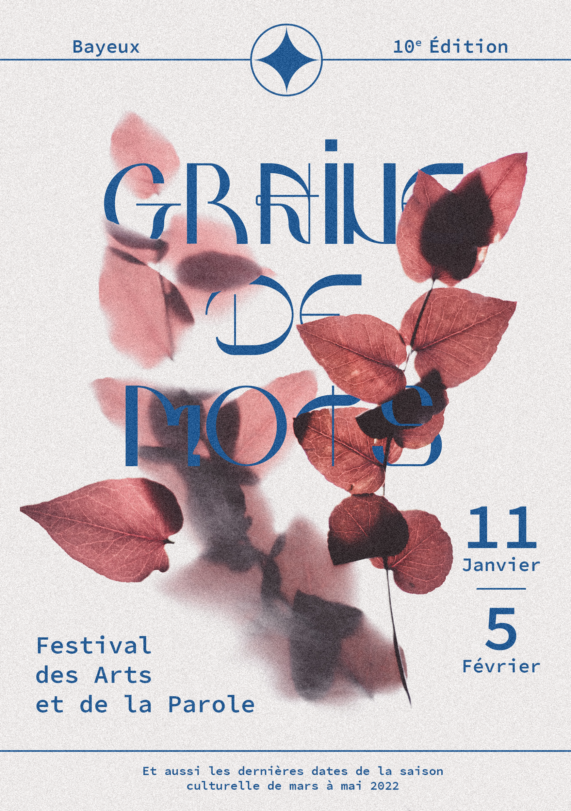
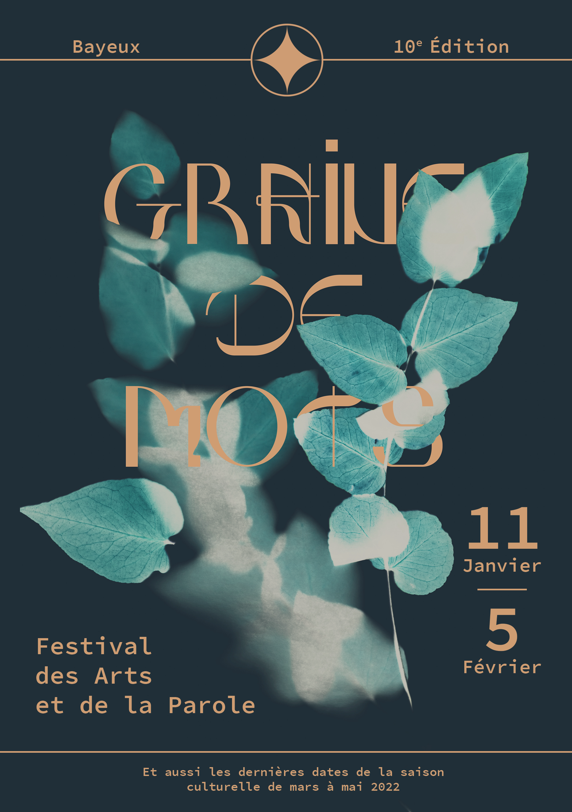
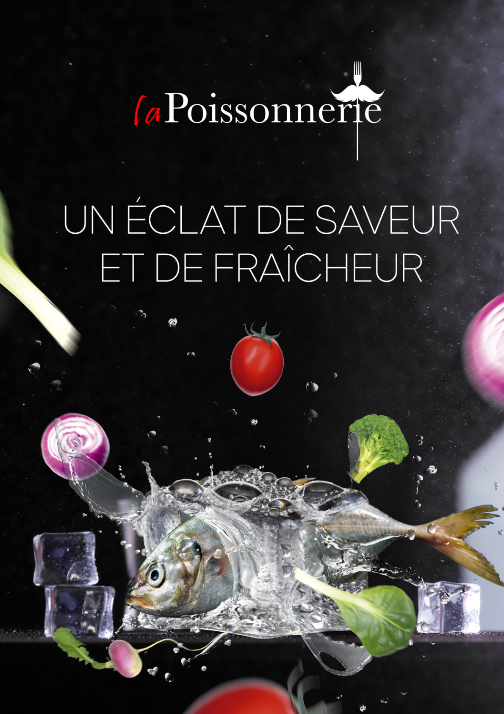
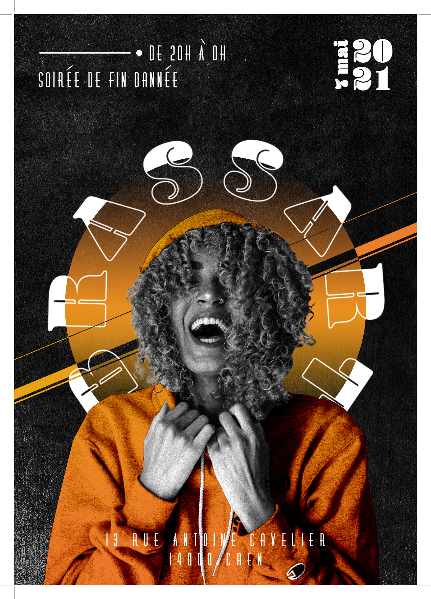
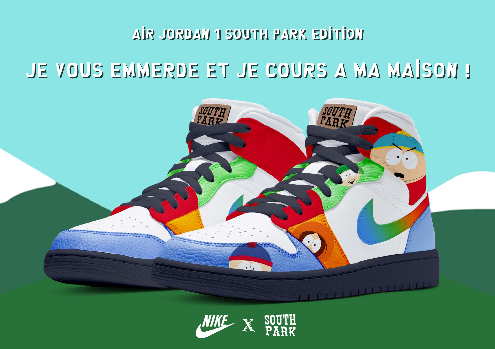
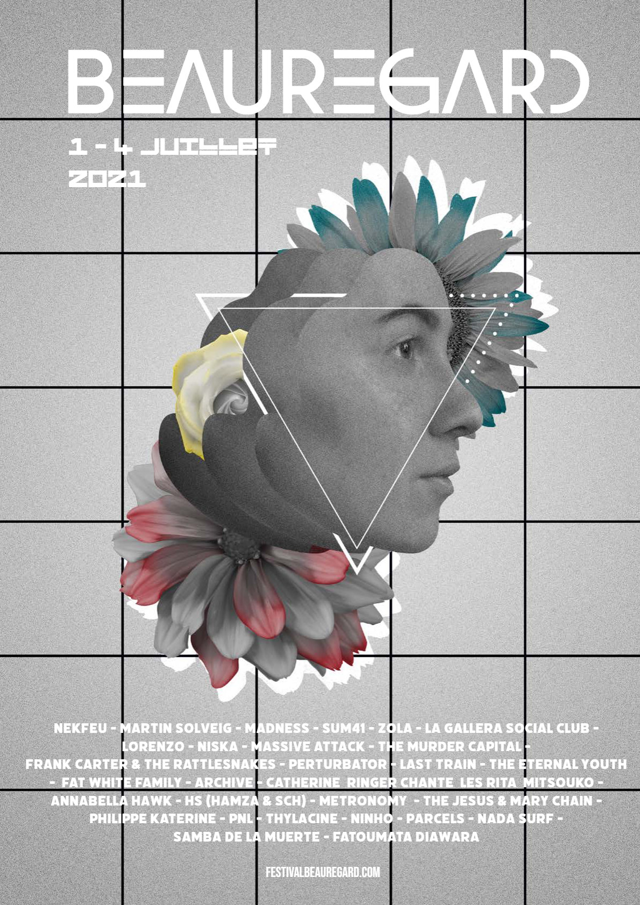
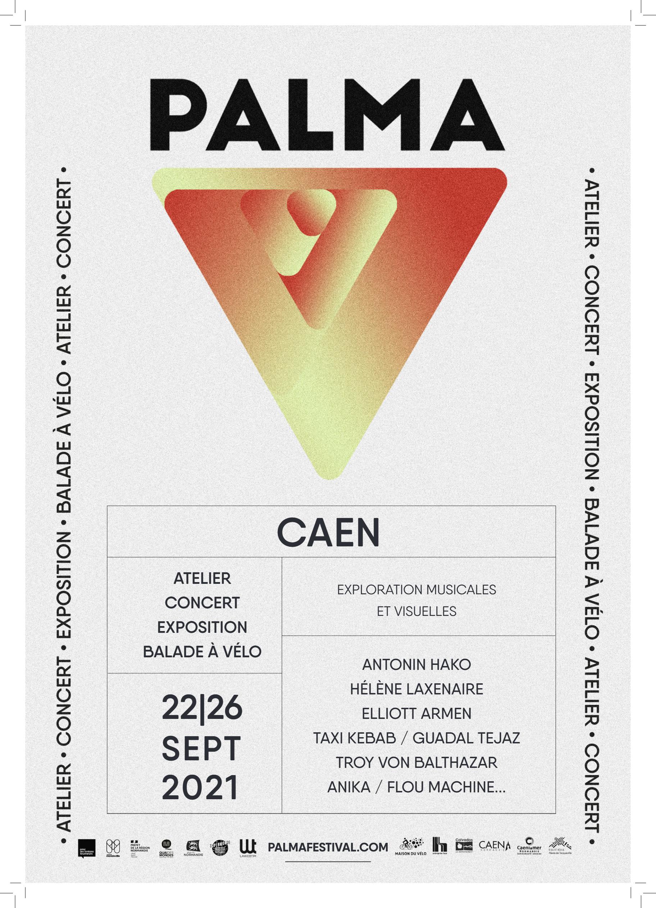

Waves
Projet personnel d'affiche réalisé dans le but d'expérimenter différentes techniques et possibilités de création sur Photoshop.
Portfolio
Affiches
Une sélection d'affiches réalisées dans le cadre de projets personnels et scolaires, explorant différentes approches graphiques et thématiques.

Projet personnel d'affiche réalisé dans le but d'expérimenter différentes techniques et possibilités de création sur Photoshop.

Déclinaison graphique de mon logo d'artiste, cette affiche explore mon identité visuelle à travers une composition plus expérimentale et un travail autour de la typographie et des effets graphiques.

Initialement réalisée dans le cadre d'un projet scolaire autour d'un brief fictif pour le festival « Graine de mots », cette affiche m'a particulièrement plu et m'a poussé à reprendre le projet afin d'affiner et d'améliorer le visuel.

Déclinaison sombre de l'affiche « Graine de mots ». Cette seconde version reprend le concept et la composition du projet original tout en développant une atmosphère plus sombre et une nouvelle approche visuelle.

Cette affiche a été produite dans le cadre d'un rendu scolaire. L'objectif, en suivant le brief, était de produire une affiche avec les éléments mis à disposition tout en travaillant les aspects de chacun d'eux et l'effet de transparence du glaçon avec les éclaboussures.

Cette affiche a été produite dans le cadre d'un rendu scolaire. L'objectif était de produire une affiche pour les portes ouvertes de mon établissement.

Produite dans le cadre scolaire, cette affiche fictive de communication commerciale devait faire la promotion d'une collaboration entre les marques South Park et Nike.

Cette affiche fictive a été produite dans le cadre scolaire. L'objectif était simplement de faire une affiche pour le festival de Beauregard.

Dans un cadre scolaire, l'objectif était de créer une affiche pour le festival Palma. Le but premier était de travailler la mise en page, j'y ai également intégré un logo que j'ai pu réaliser moi-même dans un univers graphique qui m'est propre.